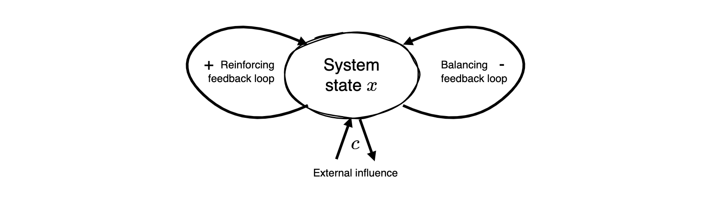

import numpy as np
import matplotlib.pyplot as plt
from ipywidgets import interactEx | Tipping elements
Open the latest version on the web, Github or in GoogleColab
In this exercise, we will conduct bifurcation analyses of three different systems.
Robustness of the tipping elements model
In this exercise, we will investigate the robustness of the tipping elements model. We will do this changing the functional forms of the reinforcing and balancing feedback loops.

\[\Delta x = (x^3 - ax^5 + c) \frac{1}{\tau},\]
where, as in the model of the lecture, \(\tau\) represents the typical time scale of the system, and thus, inverse strength of the system’s change, and \(a\) is a parameter that determines the strength of the balancing feedback loop in relation to the reinforcing feedback loop (with unit stength). Compare this form with the one in the lecture. What is the difference?
Step 1 | Time evolution
Implement the update_function for this new model in Python.
# ...Showcae the bistability of this model by plotting the time evoltion of the system state for different initial conditions.
# ...Visualize the same inital conditions in a cobweb plot.
# ...Step 2 | Bifurcation analysis
Conduct a bifurcation analysis accodring to the one in the lecture, including the calculation and plotting of the equilibirum points and their stability.
# ...…
# ...Step 3 | Potential function
Derive and plot the potential function for this model
# ...…
# ...Step 4 | Conclusion
Briefly summarize what your findings mean for the robustness of the tipping elements model.
…
The subcritical pitchfork bifurcation
Bifurcation theory orders different kinds of bifurcations. A so-called subcritical pitchfork bifurcation is defined as one where an unstable equilibrium point split into three, two unstable and one stable. Its difference equation (in normal form) is given by
\[\Delta x =x^3 - cx,\]
where \(c\) is a parameter that controls the system’s stability and \(x\) is the system state.
Your task is to implement this model and conduct a bifurcation analysis. We will also use this model in the next lecture.
Step 1 | Stability analysis
Find the critical thresholds of the parameter \(c\) at which bifurcations occur and study the stability of each equilibrium point in dependence of the parameter value.
# ...…
# ...Step 2 | Bifurcation diagramm
Draw an analytical bifurcation diagram of this model for \(-1<c<2\), showing the equilibrium points and their stability.
# ...Now, you should be able to observe why this bifurcation is called a pitchfork bifurcation.
Step 3 | Potential function
Derive and plot the potential function for this model. Also include the equilibirum points and their stability.
# ...Another kind of bifurcation in the logistic map
In this exercise we will investigate another kind of bifurcation in the logistic map. Let’s revisit the logistic map in the form, \[x_{t+1} = cx_{t}(1-x_{t}),\] where \(c>0\).
Step 1 | Stability analysis
Find the critical thresholds of the parameter \(c\) at which bifurcations occur and study the stability of each equilibrium point in dependence of the parameter value.
# ...…
# ...Step 2 | Simulations
Simulate the model with several selected values of to confirm the results of analysis.
# ...…
# ...Step 3 | Bifurcation diagramm
Draw (simulate) a bifurcation diagram of this model for \(0<c<4\).
# ...Step 4 | Sensitivity to initial conditions
Draw two trajectories from almost the same but a different initial condition for a paramter value \(3.7<c<4.0\). Draw the two trajectories ontop of each other with different color and linestyle.
# ...You should see that the trajectories diverge after a while. This is called sensitive dependence on initial conditions, a key property of so-called chaotic systems.